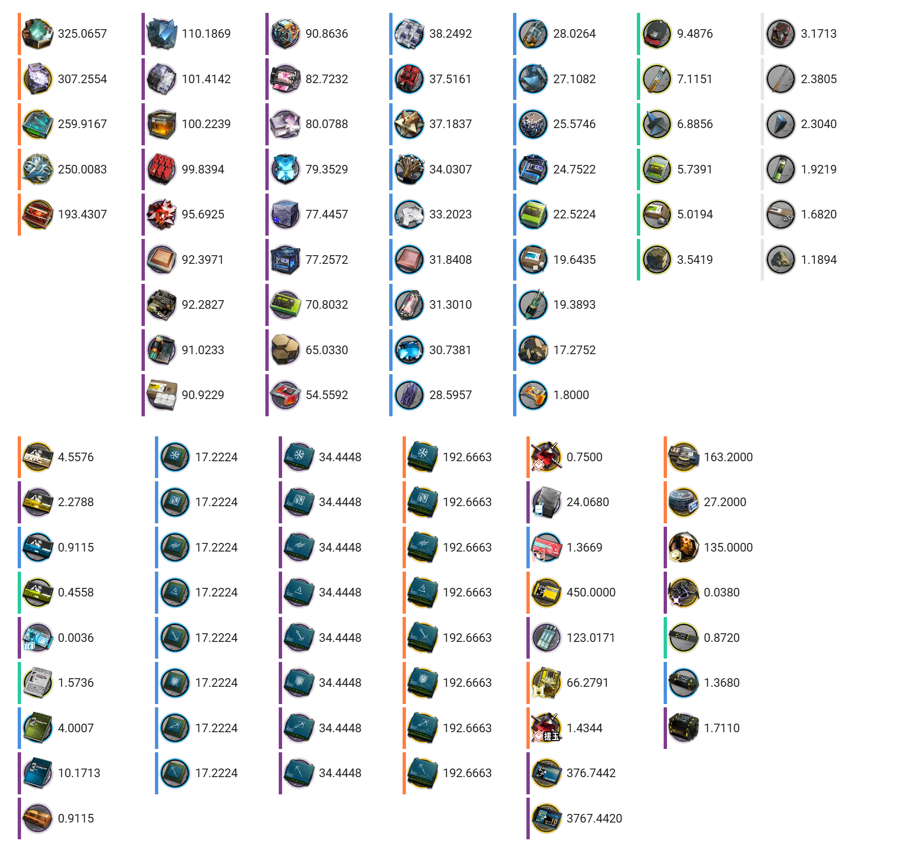
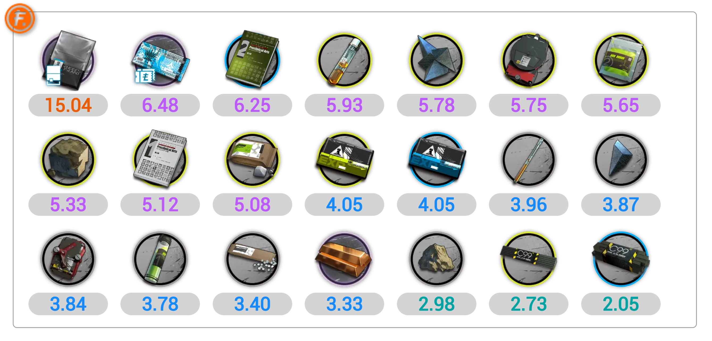

作者：BioHazard
bilibili：Bio-Hazard，https://space.bilibili.com/37179776
森空岛：BioHazard，https://www.skland.com/profile?id=1138552273321
NGA：Bio-Hazard，https://bbs.nga.cn/thread.php?authorid=60824354
排版：BioHazard、欧洲鲫鱼
封面：好问题
English ver.: Optimal Purchase Strategy of Credit Store, The Value of Credit
bilibili：https://www.bilibili.com/read/cv36832660
森空岛：https://www.skland.com/article?id=2162530
NGA：https://bbs.nga.cn/read.php?tid=41171729
说明
本文的主要内容写于 2024-07 ~ 2024-08。
2025-01-22，明日方舟「相见欢」版本新增了一个信用的获取途径：通过会客室信息板获取信用。每日首次来访的好友会在信息板上带来 30 信用（每周上限 300 信用，周一 04:00 刷新）。可以在一周内的任何时间领取信息板上的全部信用，且每周首次打开信息板时会自动领取上周未领取的全部信用。
在本文的假设框架内，无法将这一改动纳入考虑。因此本文的过程和结论仅适用于「相见欢」以前的版本。请注意时效性。
摘要
本文推导了信用交易所最优购买策略，由此计算信用的价值和平均每日能够购买的物品数量。
本文介绍了 8 种不同的购买策略，并比较了它们的优劣。其中，“按性价比从高到低购买，并设定性价比阈值策略”十分亮眼，不仅实施起来操作简单，且与最优策略的表现相差无几。
本文还讨论了使用 MAA 购买时，MAA 的最佳设置，以及讨论了考虑存线索时的最优购买策略和近似策略。
本文的主要结论：
- 3 发电站基建布局比 2 发电站基建布局每日多获得的 129 信用大约相当于 5.2206 理智。
- “从左到右购买，直到不能购买为止”策略的表现只有最优策略的 84.4615% 左右。
- “按性价比从高到低购买，直到不能购买为止”策略的表现可以达到最优策略的 98.6074% 左右。
- “按性价比从高到低购买，并设定性价比阈值”策略的表现可以进一步达到最优策略的 99.9383% 左右。
- 使用 MAA 购买时，推荐的黑白名单填写方式：
- 优先购买：招聘许可；龙门币；技巧概要·卷2
- 黑名单：加急许可；家具零件；碳；碳素
并且，不勾选“只购买打折的信用商品”，不勾选“信用点低于 300 时停止购买商品”，每日获得 813 信用时，不勾选“信用溢出时无视黑名单”；每日获得 942 信用时，勾选“信用溢出时无视黑名单”。
引言
信用交易所是明日方舟中获取养成资源的途径之一。信用交易所共有 10 个栏位，每个栏位有且仅有 1 组物品（1 组物品包含若干个物品，可以不购买或者一次性购买 1 组中的全部物品），部分栏位的商品有折扣。
购买信用交易所中的商品需要花费信用。玩家每日可以获取一定数量的信用。
信用交易所每日 04:00 刷新，每个栏位都会刷新。并且，刷新时，未花完的信用至多保留 300 信用到下一天，超出 300 信用的部分在刷新时会被系统没收。
| 现有信用 | 75 / 300 | ||||||||
| 栏位 0 | 栏位 1 | 栏位 2 | 栏位 3 | 栏位 4 | |||||
| 破损装置×2 | -75% | 赤金×6 | -75% | 糖×2 | -50% | 源岩×2 | -50% | 酮凝集×2 | -50% |
| 售罄 | 售罄 | 售罄 | 售罄 | 售罄 | |||||
| 原价 160 信用 | 现价 40 信用 | 原价 160 信用 | 现价 40 信用 | 原价 200 信用 | 现价 100 信用 | 原价 80 信用 | 现价 40 信用 | 原价 240 信用 | 现价 120 信用 |
| 栏位 5 | 栏位 6 | 栏位 7 | 栏位 8 | 栏位 9 | |||||
| 糖×2 | 无折扣 | 龙门币×3600 | 无折扣 | 初级作战记录×9 | 无折扣 | 初级作战记录×9 | 无折扣 | 招聘许可×1 | 无折扣 |
| 售罄 | 售罄 | ||||||||
| 现价 200 信用 | 现价 200 信用 | 现价 200 信用 | 现价 200 信用 | 现价 160 信用 | |||||
| 现有信用 | 75 / 300 | ||||||||
| 栏位 0 | 栏位 1 | 栏位 2 | 栏位 3 | 栏位 4 | |||||
| 破损装置×2 | -75% | 赤金×6 | -75% | 糖×2 | -50% | 源岩×2 | -50% | 酮凝集×2 | -50% |
| 售罄 | 售罄 | 售罄 | 售罄 | 售罄 | |||||
| 原价 160 信用 | 现价 40 信用 | 原价 160 信用 | 现价 40 信用 | 原价 200 信用 | 现价 100 信用 | 原价 80 信用 | 现价 40 信用 | 原价 240 信用 | 现价 120 信用 |
| 栏位 5 | 栏位 6 | 栏位 7 | 栏位 8 | 栏位 9 | |||||
| 糖×2 | 无折扣 | 龙门币×3600 | 无折扣 | 初级作战记录×9 | 无折扣 | 初级作战记录×9 | 无折扣 | 招聘许可×1 | 无折扣 |
| 售罄 | 售罄 | ||||||||
| 现价 200 信用 | 现价 200 信用 | 现价 200 信用 | 现价 200 信用 | 现价 160 信用 | |||||
那么，一个自然的问题是：为了尽可能多地获取资源，应该购买信用交易所中的哪些商品呢？
本文将推导信用交易所最优购买策略，还会介绍其他 7 种购买策略并比较它们的优劣，从而解决这一问题。
相关工作
每日能获得的信用数量
每日可获得的信用包括
- 宿舍氛围值总和换算获得的信用；
不同的基建布局，每日通过此途径能获得的信用数量不同。
假设宿舍氛围值达到上限，
- 3 个 1 级宿舍，每日可通过此途径获得 54 信用；
- 4 个 1 级宿舍，每日可通过此途径获得 72 信用；
- 1 个 2 级宿舍、3 个 1 级宿舍，每日可通过此途径获得 80 信用；
- 4 个 5 级宿舍，每日可通过此途径获得 200 信用。
- 使用一次支援单位获得 30 信用；
- 被他人使用一次支援单位获得 20 信用；
- 开启线索交流，结束后获得 210 信用；
- 访问 10 名开启线索交流的好友，共获得 300 信用；
- 会客室每日 04:00 获得线索并传递给好友，获得 40 信用；
- 收取好友传递的线索，共 30 信用；
- 会客室干员搜集线索并传递给好友，每搜集 1 张线索获得 20 信用，每传递 1 张线索获得 20 信用。
线索的基础搜集时间为 20 小时。
假设平均线索搜集速度为\(x\)（其中包含 1.0 基础线索搜集速度），则每日可搜集到的线索数量为\(24 / 20 \cdot x\)，相当于\(24 / 20 \cdot x \cdot 40 = 48 \cdot x\)信用。
来源 | 信用数量 |
宿舍氛围值总和换算 | 54 ~ 200 不等 |
使用一次支援单位 | 30 |
被他人使用一次支援单位 | 20 |
开启线索交流 | 210 |
访问开启线索交流的好友 | 300 |
会客室初始线索并传递 | 40 |
收取好友传递的线索 | 30 |
会客室干员搜集线索并赠送 | 48 * 平均线索搜集速度 |
总计 | 684 ~ 830 不等 + 48 * 平均线索搜集速度 |
- 2 发电站基建布局下，每日能获得大约 813 信用；
- 3 发电站基建布局下，每日能获得大约 942 信用。
信用交易所刷新统计
信用交易所商品分类
图片来源：PRTS Wiki
| 商品名称 | 物品 | 数量 | 原价（信用） |
| 龙门币×1800 | 龙门币 | 1800 | 100 |
| 龙门币×3600 | 龙门币 | 3600 | 200 |
| 家具零件×20 | 家具零件 | 20 | 160 |
| 家具零件×25 | 家具零件 | 25 | 200 |
| 招聘许可×1 | 招聘许可 | 1 | 160 |
| 加急许可×1 | 加急许可 | 1 | 160 |
| 赤金×6 | 赤金 | 6 | 160 |
| 基础作战记录×9 | 基础作战记录 | 9 | 100 |
| 初级作战记录×9 | 初级作战记录 | 9 | 200 |
| 技巧概要·卷1×5 | 技巧概要·卷1 | 5 | 160 |
| 技巧概要·卷2×3 | 技巧概要·卷2 | 3 | 200 |
| 碳×5 | 碳 | 5 | 160 |
| 碳素×3 | 碳素 | 3 | 200 |
| 源岩×2 | 源岩 | 2 | 80 |
| 代糖×2 | 代糖 | 2 | 100 |
| 酯原料×2 | 酯原料 | 2 | 100 |
| 异铁碎片×2 | 异铁碎片 | 2 | 120 |
| 双酮×2 | 双酮 | 2 | 120 |
| 破损装置×2 | 破损装置 | 2 | 160 |
| 固源岩×3 | 固源岩 | 3 | 200 |
| 糖×2 | 糖 | 2 | 200 |
| 聚酸酯×2 | 聚酸酯 | 2 | 200 |
| 异铁×2 | 异铁 | 2 | 240 |
| 酮凝集×2 | 酮凝集 | 2 | 240 |
| 装置×1 | 装置 | 1 | 160 |
| 商品名称 | 物品 | 数量 | 原价（信用） |
| 龙门币×1800 | 龙门币 | 1800 | 100 |
| 龙门币×3600 | 龙门币 | 3600 | 200 |
| 家具零件×20 | 家具零件 | 20 | 160 |
| 家具零件×25 | 家具零件 | 25 | 200 |
| 招聘许可×1 | 招聘许可 | 1 | 160 |
| 加急许可×1 | 加急许可 | 1 | 160 |
| 赤金×6 | 赤金 | 6 | 160 |
| 基础作战记录×9 | 基础作战记录 | 9 | 100 |
| 初级作战记录×9 | 初级作战记录 | 9 | 200 |
| 技巧概要·卷1×5 | 技巧概要·卷1 | 5 | 160 |
| 技巧概要·卷2×3 | 技巧概要·卷2 | 3 | 200 |
| 碳×5 | 碳 | 5 | 160 |
| 碳素×3 | 碳素 | 3 | 200 |
| 源岩×2 | 源岩 | 2 | 80 |
| 代糖×2 | 代糖 | 2 | 100 |
| 酯原料×2 | 酯原料 | 2 | 100 |
| 异铁碎片×2 | 异铁碎片 | 2 | 120 |
| 双酮×2 | 双酮 | 2 | 120 |
| 破损装置×2 | 破损装置 | 2 | 160 |
| 固源岩×3 | 固源岩 | 3 | 200 |
| 糖×2 | 糖 | 2 | 200 |
| 聚酸酯×2 | 聚酸酯 | 2 | 200 |
| 异铁×2 | 异铁 | 2 | 240 |
| 酮凝集×2 | 酮凝集 | 2 | 240 |
| 装置×1 | 装置 | 1 | 160 |
信用交易所中，除了干员讯使、嘉维尔、坚雷之外，共出售 25 种商品，其中龙门币和家具零件各有 2 种规格。
在所有的 25 种商品中，有 22 种商品有明显的高低阶关系，将它们分为“低阶商品”和“高阶商品”两组，每组各 11 种商品。
“低阶商品”和“高阶商品”统称为“分等阶商品”。
另外 3 种商品没有高低阶关系，将它们称为“不分等阶商品”。
| 分等阶商品 | 不分等阶商品 | ||||
| 低阶商品 | 高阶商品 | ||||
| 龙门币×1800 | 龙门币×3600 | 招聘许可×1 | |||
| 家具零件×20 | 家具零件×25 | 加急许可×1 | |||
| 基础作战记录×9 | 初级作战记录×9 | 赤金×6 | |||
| 技巧概要·卷1×5 | 技巧概要·卷2×3 | ||||
| 碳×5 | 碳素×3 | ||||
| 源岩×2 | 固源岩×3 | ||||
| 代糖×2 | 糖×2 | ||||
| 酯原料×2 | 聚酸酯×2 | ||||
| 异铁碎片×2 | 异铁×2 | ||||
| 双酮×2 | 酮凝集×2 | ||||
| 破损装置×2 | 装置×1 | ||||
| 分等阶商品 | 不分等阶商品 | |
| 低阶商品 | 高阶商品 | |
| 龙门币×1800 | 龙门币×3600 | 招聘许可×1 |
| 家具零件×20 | 家具零件×25 | 加急许可×1 |
| 基础作战记录×9 | 初级作战记录×9 | 赤金×6 |
| 技巧概要·卷1×5 | 技巧概要·卷2×3 | |
| 碳×5 | 碳素×3 | |
| 源岩×2 | 固源岩×3 | |
| 代糖×2 | 糖×2 | |
| 酯原料×2 | 聚酸酯×2 | |
| 异铁碎片×2 | 异铁×2 | |
| 双酮×2 | 酮凝集×2 | |
| 破损装置×2 | 装置×1 | |
| 分等阶商品 | 不分等阶商品 | |
| 低阶商品 | 高阶商品 | |
| 龙门币×1800 | 龙门币×3600 | 招聘许可×1 |
| 家具零件×20 | 家具零件×25 | 加急许可×1 |
| 基础作战记录×9 | 初级作战记录×9 | 赤金×6 |
| 技巧概要·卷1×5 | 技巧概要·卷2×3 | |
| 碳×5 | 碳素×3 | |
| 源岩×2 | 固源岩×3 | |
| 代糖×2 | 糖×2 | |
| 酯原料×2 | 聚酸酯×2 | |
| 异铁碎片×2 | 异铁×2 | |
| 双酮×2 | 酮凝集×2 | |
| 破损装置×2 | 装置×1 | |
数据来源
BioHazard、Zirunwang 等博士于 2023-11-14 至 2024-03-12 期间，收集了 83 个 CN 服务器账号的 5879 张信用交易所截图。
账号信息以及原始数据可以在 信用商店统计 云文档中找到。感兴趣的博士可以下载文档，进行研究分析。
信用交易所的“质量”与账号的关系
有小号的博士很容易发现，成熟的老账号与新创建的账号的信用交易所的“风格”截然不同。新账号的信用交易所中低阶商品的占比明显比老账号的更高；而老账号的高阶商品的占比明显比新账号的更高。
我们把“高阶商品占比高，低阶商品占比低”称为信用交易所“质量高”，反过来则称为“质量低”。
什么因素影响了信用交易所的“质量”呢？
PeterYR 于 2020 年秋在 Calculating Friend Credits 中猜测，控制中枢的等级影响信用交易所的“质量”。
These simple averages are also unweighted. However, offers in the credit shop have varying rates of appearance. This is very noticeable if you have alt accounts: new accounts will get many tier 1 materials in their credit shops, while veteran accounts rarely see them at all. I suspect that the level of a player's Control Center affects the offers that show up, though I don't have any concrete evidence. Regardless, by taking a simple average of all possible offers, these simple calculations assume all offers appear equally as often, resulting in more inaccuracy.
这些简单平均法也是未考虑权重的。然而，信用交易所中商品的出现频率各不相同。如果你有小号，这一点非常明显：新账号在信用交易所中会看到很多 T1 精英材料，而老账号几乎看不到这些材料。我怀疑玩家的控制中枢等级会影响出现的商品种类，尽管我没有确凿的证据。无论如何，通过简单地对所有可能的商品取平均值，这些简单的计算假设所有商品出现的频率相同，这导致了更大的不准确性。
根据我们的统计数据，PeterYR 的猜测是不对的。信用交易所的“质量”与控制中枢等级、会客室等级、加工站等级、宿舍总等级等基建的因素都不相关。在我们认为可能影响信用交易所“质量”的许多变量中，主线进度这一变量与信用交易所的“质量”呈现出了最明显的相关性。
具体地，使用我们的统计数据，绘制出散点图。
根据我们的统计数据，
- 未通关主题曲 1-7 的的情况下，信用交易所中不会出现高阶商品；
- 通关主题曲 1-7，但未通关 3-8 的情况下，信用交易所中高阶商品占分等阶商品的比例随着主题曲通关的作战数量的增加呈现上升趋势。
- 通关主题曲 3-8 之后，高阶商品占分等阶商品的比例不再呈现上升趋势。
在统计到的的 5879 个商店中，有 3977 个商店来自已通关主题曲 3-8 的账号。
信用交易所商品的经验分布
由于信用交易所有 10 个栏位，可能出现的商品有 25 种，折扣有 5 种，故至多有\((25 \cdot 5)^{10}\)种可能的商店。
不管这个数有多大，我们只关心它是一个有限数。
我们假设通关主题曲 3-8 之后，每日生成商店的时候，是从所有\((25 \cdot 5)^{10}\)种可能里面，按照固定的概率抽取一个。
由于具体的生成算法不得而知，只能使用统计结果来估计总体。我们近似地认为通关主题曲 3-8 之后商店的生成算法是从收集得到的 3977 个样本中，等概率地抽取一个。
朴素的购买策略
不同的博士可能有不同的方式来决定购买信用交易所中的哪些商品。这里列出几种“朴素”的购买策略。
- 啥都不买
- 随机购买
- 从左到右购买
一般来说，折扣力度较大的商品会更靠前，从左到右购买基本上相当于是按折扣顺序购买。
- 设定黑白名单，先购买白名单中的物品，再从左到右购买，不购买黑名单中的物品
MAA 使用的是这个策略。
这类“按某个顺序购买”的策略（包括下面的按性价比顺序购买的策略）都有一些变体。比如停止购买的时机可以是“直到不能购买为止”，也可以是“直到信用小于等于 300 为止”。
“设定黑白名单”的策略还有一种变体，即可以选择是否在信用大于 300 时无视黑名单继续购买。
- 按性价比从高到低购买
我们可以为每种物品赋予价值（通常而言是把物品折算成理智，即“理智价值”），把价值除以现价计算出每个商品的性价比，然后按性价比从高到低购买。
物品的理智价值可以参考 明日方舟一图流 − 物品价值表。信用交易所的商品性价比可以在 明日方舟一图流 − 商店性价比 中找到。
 图 7. 2025-01-15 明日方舟一图流 − 物品价值表  图 8. 2024-07-25 明日方舟一图流 信用交易所性价比 一图流展示的性价比的计算公式为：性价比 = 理智价值 / 原价 * 100。
一图流展示的性价比是按商品的原价计算的，使用时只需根据折扣乘以一个系数即可。例如，若折扣为 -75%，则把按原价计算的性价比乘 4 即可得到按现价计算的性价比。
相比于从左到右购买，按性价比从高到低购买的好处是显而易见的。对于许多博士来说，家具零件和加急许可的价值非常低，即使它们的折扣力度很大，也不愿意购买；而招聘许可的价值很高，即使不打折也倾向于购买。
“按性价比从高到低购买”的策略看上去已经比较好了，但是实际操作过程中可能会遇到这样的纠结情况：
- 博士甲每日能获得的信用比较多，目前剩余 350 信用，未购买的商品中，性价比最高的商品是原价的碳素，不知道该不该购买。
- 博士乙每日能获得的信用比较少，目前剩余 280 信用，未购买的商品中，性价比最高的商品是原价的双酮，不知道该不该购买。
“按性价比从高到低购买”的策略并不能直接回答类似的问题，我们需要一个更加详尽的策略来决定到底应该购买信用交易所中的哪些商品。
新方法
信用交易所最优购买策略
为了讨论信用交易所最优购买策略，我们需要以下假设：
- 假设每日生成商店的时候，是从若干种可能性中按照固定的概率抽取一个；
- 假设每日获得的信用数量固定，为\(C\)；
- 假设每种物品被赋予了一个固定的价值。
问题描述
首先需要解释清楚什么是“最优策略”。
直观地来说，一个策略“优”指的是：按照这一策略，在未来很长一段时间内购买的物品的总价值高。
由于未来的商店是随机的，故上面说的“总价值高”通常在期望的意义下考虑。
先定义“策略”：策略\(F\)是一个函数，输入
- 当前是第几天，
- 前一天继承下来的信用数量，
- 当天的 10 个商品的现价和价值，
输出要购买哪些商品。
如果一个策略不会超支，则称为“可行策略”。
- “不超支”指输出的要购买的商品总价小于等于前一天继承下来的信用数量加每日获得的信用数量
- “啥都不买”总是可行策略。
- 我们定义的“策略”不具有随机性。固定一个输入，策略总是给出相同的输出。
- “当前是第几天”加入函数的输入是一个技术性的操作。我们暂时允许“天数”作为变量，以便于推导最优策略。
如何评价策略的好坏？
假设考虑的时间跨度是\(N\)天。
\(J_N(F)\)定义为：以策略\(F\)运行\(N\)天，购买的物品的总价值的期望。
\(J_N(F)\)越大，说明策略越好。
具体地，设\(X_n\)是在策略\(F\)下第\(n\)天购买的物品的总价值。\(X_n\)是随机变量。
\(J_N(F)\)定义为\(\mathbb E (X_1 + \cdots + X_N)\)。
要找最优策略，也就是要找一个可行策略\(F\)使得\(J_N(F)\)最大。
时间跨度\(N\)有限时，\(J_N(F)\)是良定的且有限，并且由于所有可能的输入与所有可能的输出的个数都是有限的，策略全体的个数也是有限的；又因为存在可行策略，因此最优策略总是存在的。
推导最优策略
仍然假设考虑的时间跨度是\(N\)天。
设第\(n-1\)天留给第\(n\)天的信用数量为\(c_n (0 \le c_n \le 300)\)。
\(N = 1\)时，问题变成简单的 01 背包问题。即，在\(2^{10}\)种购买方案中选一种不超支的，使得购买的物品的总价值最大。
从直观上来理解：\(N=1\)意味着只考虑 1 天，不考虑第 2 天了，所以不用考虑“留信用给第 2 天”这件事情，因此只需要在这唯一考虑的 1 天里面“竭泽而渔”购买就行。
证明：
\(J_1(F) = \mathbb E (X_1)\)，按 01 背包问题考虑可以使\(X_1\)在每个基本事件上都达到最大，从而\(J_1(F)\)最大。
\(N = 2\)时，总共考虑 2 天。
第 2 天由于是最后一天，无论第 1 天留了多少信用给第 2 天，第 2 天都只需要按 01 背包问题考虑即可。而第 1 天的策略会复杂一点，因为第 1 天可以留一部分信用给第 2 天。
假设\(c_2 = c\)，则第 2 天有\(c + C\)信用。遍历第 2 天所有可能的商店，按 01 背包问题求出第 2 天能购买的物品的总价值的最大值，即可求出第 2 天手握\(c + C\)信用的情况下，能购买的物品的总价值的最大值的期望，记为\(K_C^1(c)\)。
第 1 天的商店共有\(2^{10}\)种购买方案。对于每种可能的购买方案，在第 1 天的商店已知的情况下，可以计算\(J_2(F) = \mathbb E (X_1 + X_2) = X_1 + K_C^1(c_2)\)。
回忆\(X_n\)是第\(n\)天购买的物品的总价值，而在第 2 天用最优策略的情况下，\(\mathbb E(X_2|c_2=c) = K_C^1(c)\)。
因此，第 1 天只要在\(2^{10}\)种购买方案中选一种不超支的，使得\(X_1 + K_C^1(c_2)\)最大即可。
\(N = 3\)时，类似地，无论第 2 天留给第 3 天多少信用，第 3 天的最优策略一定是按 01 背包问题考虑。
第 2 天的最优策略是什么呢？其实和\(N=2\)时第 1 天的最优策略一样（因为都是倒数第 2 天）。
仍沿用之前的符号\(K_C^1(c)\)，但此时\(K_C^1(c)\)表示的是第 3 天手握\(c + C\)信用的情况下，能购买的物品的总价值的最大值的期望。
第 2 天的最优策略是在\(2^{10}\)种购买方案中选一种不超支的，使得\(X_2 + K_C^1(c_3)\)最大。
现在考虑第 1 天的最优策略。
由于已知第 2 天的最优策略，假设\(c_2 = c\)，遍历第 2 天所有可能的商店，按第 2 天的最优策略求出第 2 天到第 3 天能购买的物品的总价值的最大值的期望，记为\(K_C^2(c)\)。即\(K_C^2(c) = \mathbb E(X_2 + X_3 | c_2 = c) = \mathbb E (X_2 + K_C^1(c_3) | c_2 = c)\)
第 1 天的最优策略是在\(2^{10}\)种购买方案中选一种不超支的，使得\(X_1 + K_C^2(c_2)\)最大。
以此类推，当\(N = m\)时，第 2 天的最优策略已经在\(N = m - 1\)时求出。假设\(c_2 = c\)，按第 2 天的最优策略求出第 2 天到第\(m\)天能购买的物品的总价值的最大值的期望，记为\(K_C^{m-1}(c)\)，\(K_C^{m-1}(c) = \mathbb{E}(X_2 + \cdots + X_m | c_2 = c) = \mathbb{E}(X_2 + K_C^{m-2}(c_3) | c_2 = c)\)。
此时\(\mathbb E (X_1 + \cdots + X_m) = \mathbb E (X_1 + K_C^{m-1}(c_2))\)。
因此第 1 天的最优策略是在\(2^{10}\)种购买方案中选一种，使得\(X_1 + K_C^{m-1}(c_2)\)最大。
信用交易所最优购买策略
综合上述讨论，我们把信用交易所最优购买策略完整地写出来。
- “最优策略”定义为使得\(N\)天内购买的物品的总价值的期望最大的可行策略。
- 第\(N\)天的最优策略是：在\(2^{10}\)种购买方案中选一种不超支的，使得第\(N\)天购买的物品的总价值最大，即 01 背包问题。
- 设第\(N-1\)天留给第\(N\)天的信用数量为\(c_N = c\)，定义\(K_C^1(c)\)为第\(N\)天手握\(c+C\)信用的情况下，第\(N\)天能购买的物品的总价值的最大值的期望（按照第\(N\)天的最优策略计算）。
- 第\(N-1\)天的最优策略是：在\(2^{10}\)种购买方案中选一种不超支的，使得第\(N-1\)天购买的物品的总价值与\(K_C^1(c_N)\)的和最大。
- 假设已经求出第\(N - n + 1\)天（倒数第\(n\)天）的最优策略以及对应的\(K_C^{n-1}(c)\)。设倒数第\(n + 1\)天留给倒数第\(n\)天的信用数量为\(c_{N-n+1} = c\)，定义\(K_C^n(c)\)为倒数第\(n\)天手握\(c+C\)信用的情况下，倒数第\(n\)天到倒数第 1 天能购买的物品的总价值的最大值的期望。
- 倒数第\(n + 1\)天的最优策略是：在\(2^{10}\)种购买方案中选一种不超支的，使得倒数第\(n + 1\)天购买的物品的总价值与\(K_C^n(c_{N-n+1})\)的和最大。
- 重复步骤 5 和 6，求出\(K_C^1, \cdots, K_C^{N-1}\)。
- 第 1 天的最优策略是：在\(2^{10}\)种购买方案中选一种不超支的，使得第 1 天购买的物品的总价值与\(K_C^{N-1}(c_2)\)的和最大。
回忆\(c_2\)是第 1 天留给第 2 天的信用数量，即第 1 天的剩余信用与 300 的较小值。
关于\(K_C^n\)的一些补充
- 为方便起见，可以令\(K_C^0 \equiv 0\)，这样最后一天的购买策略与第 1 天到第\(N - 1\)天的购买策略是一致的。
- 对于任意的\(n\)，\(K_C^n(c)\)关于\(c\)单增。这是直观的，因为继承的信用越多，能买到的物品的总价值不可能变少。
- 计算\(K_C^n\)只需要用到\(K_C^{n-1}\)、\(C\)、商店的概率分布、以及物品的价值，不需要用到\(N\)，也不需要用到\(K_C^1, \cdots, K_C^{n-2}\)。
信用的价值
信用的价值依赖于信用交易所中售卖的物品的价值。
在计算信用的价值之前，务必确保商店中物品的价值是准确且有意义的，否则计算出来的信用价值就会失去意义。
我们已经推导出了信用交易所最优购买策略，现在可以使用最优购买策略来计算信用的价值了。
不过，“信用的价值”这个短语的含义是模糊的。“信用的价值是多少？”至少可能指代 2 种不同的问题：
- 博士甲每日能获得 813 信用，博士乙每日能获得 942 信用，那么博士乙比博士甲每日多获得的 129 信用的价值是多少？
- 博士甲每日能获得 783 信用，并且博士甲几乎从不使用好友助战干员，某天博士甲使用了好友助战干员（之后不再使用），第 2 天额外获得了 30 信用，那么这额外获得的 30 信用的价值是多少？
问题 1 讨论的是每日获得的信用的价值，问题 2 讨论的是临时获得的信用的价值。这 2 种问题不可混为一谈，我们将分开讨论。
每日获得的信用的价值
首先讨论每日获得的信用的价值。
必须注意，平均每日能购买的物品的总价值与每日获得的信用数量并不呈简单正比关系，而是会存在“边际收益递减”的现象。PeterYR 在 Calculating Friend Credits 中用一个例子详细说明了这一点。
The simple-average approach also assumes the player will randomly buy from their available offers every day. In reality, any sane player would prioritize a 99% discounted pack of LMD over an undiscounted trio of Orirock Cubes. This results in diminishing returns as your daily credit income increases. The first few credits you get are spent on the better shop offers, while subsequent credits will be spent on worse offers. In the previous LMD-and-Orirocks example, the 2 credits spent towards the 99% discounted LMD are worth 3600 LMD, so each credit is worth 1800 LMD. Meanwhile, the 200 credits spent towards the undiscounted Orirock Cubes are worth 3 Cubes total, so each credit is worth only 1.5% of a single Orirock Cube. This is a pretty significant difference.
简单平均法还假设玩家每天会从可购买的商品中随机购买。实际上，任何理性的玩家都会优先选择折扣为 -99% 的龙门币，而不是无折扣的固源岩×3。这会导致随着你每日获得的信用数量的增加，回报逐渐减少。最初获得的若干信用会被用来购买更好的商店商品，而之后的信用则会被用来购买相对较差的商品。以之前的龙门币和固源岩为例，用于购买 -99% 折扣龙门币的 2 点信用价值 3600 龙门币，所以每点信用价值 1800 龙门币。与此同时，用于购买无折扣固源岩的 200 点信用总共只价值 3 固源岩，所以每点信用只价值单个固源岩的 1.5%。这是一个相当显著的差别。
As such, the question “How much is a friend credit worth?” heavily depends on how many other credits have already been spent. A better question would be something like: “If Player 1 gets 400 credits daily, and Player 2 gets 500 daily, what's the value of the 100-credit difference between the two?” Due to diminishing returns, the 100-credit difference between 400 and 500 credits is worth more than the difference between 600 and 700, for example. The simple-average method can't account for this.
因此，“1 信用价值多少？”这个问题很大程度上取决于已经花费了多少其他信用。一个更好的问题可能是：“如果玩家 A 每日获得 400 信用，而玩家 B 每日获得 500 信用，那么两者之间相差的 100 信用的价值是多少？”由于回报逐渐减少，400 信用到 500 信用之间的 100 信用差距比 600 信用到 700 信用之间的差距更有价值。简单平均法无法考虑到这一点。
计算每日获得的信用的价值需要用到最优购买策略。
仍然假设每日获得的信用数量为\(C\)。如果在足够长的时间（\(M\)天）使用最优策略能够购买的物品的总价值的期望为\(V_C\)，那么我们把\(M \cdot C\)信用的价值与\(V_C\)等同起来，即认为每日获得的\(C\)信用的价值为\(V_C / M\)。
这并不意味着 1 信用的价值为\(V_C / (M \cdot C)\)。由于存在“边际收益递减”的现象，考虑信用的“边际价值”更为合理。
我们可以通过计算“每日获得的信用的价值”曲线的“导数”，得出在特定的\(C\)附近“信用的边际价值”，也可以理解成在每日获得的信用为\(C\)时，每日多获得 1 信用的价值。
临时获得的信用的价值
现在来计算临时获得（或者失去）的信用的价值。
仍假设每日获得的信用数量为\(C\)，并假设临时获得的信用数量为\(c'\)（\(c'\)可以是负数，表示临时失去信用）。
分两种情况：
- 临时获得信用当天的商店和前一天继承的信用已知
- 临时获得信用当天的商店和前一天继承的信用未知
如果已知临时获得信用当天的商店和前一天继承的信用\(c_1\)已知，则对该商店，在手握\(c_1 + C\)和\(c_1 + C + c'\)信用的两种情形分别计算最优购买策略，两种情形在最优策略下目标函数（\(X_1 + K_C^{N-1}(c_2)\)）的差即为临时获得的\(c'\)信用的价值。
如果商店和继承的信用未知，则枚举多种可能的商店，分别计算临时获得的\(c'\)信用的价值，再取平均。
最优购买策略的近似策略
我们已经推导出了信用交易所最优购买策略，但是，计算\(K_C^{N-1}\)是非常慢的。在作者的电脑上，计算\(K_{813}^{10}\)大约需要 120 秒，如果想要对不同的\(C\)分别计算\(K_C^{N-1}\)则要花成倍的时间（虽然作者的确花了好几个小时算出来了）。而且，一旦物品的价值发生变化，或者新增了一些信用交易所的统计数据，则需要全部重新计算。
本节将构造一个最优购买策略的近似策略，准确来说是构造\(K_C^{N-1}\)的近似值，只需要几秒钟的时间就能对于全部的\(C\)完成计算，同时这个近似策略也有着接近最优策略的表现（将会在 6.5¿ 不同购买策略的比较 中说明）。
我们使用 PeterYR 在 Calculating Friend Credits 中的方法计算“信用能购买的商品碎片的价值”。
To avoid the weaknesses of the simple-average method from the previous chapter, I decided to gather data on the offers that appear in the credit shop, and run a “purchasing algorithm” on every daily credit shop. The offers in every shop would be sorted high-to-low by efficiency (Sanity value obtained per credit spent), including discounts. The algorithm would iterate through each shop, prioritizing the high-efficiency offers over lower-efficiency ones, and return the total value of everything it was able to buy. The algorithm would then be run again, with a different daily credit income.
为了避免前一章中简单平均法的缺点，我决定收集信用交易所中出现的商品的数据，并对每天的信用交易所运行一个“购买算法”。每个商店中的商品将按照算上折扣后的性价比（每花费 1 点信用获得的理智价值）从高到低排序。该算法会遍历每个商店，优先选择性价比高的商品而非性价比低的，并返回它能够购买的所有物品的总价值。然后，该算法会再次运行，但使用不同的每日信用收入来进行计算。
……
……
My calculations also ignore the fact that you can't purchase a fraction of an offer. If the algorithm runs into the 1-Device-for-80-credits offer with only 40 credits remaining, it “buys” half of the Device with all of its remaining credits, and reports that it acquired half a Device's worth of Sanity. This is obviously impossible in reality.
我的计算还忽略了一个事实，那就是你无法购买商品的一部分。如果算法在只剩下 40 信用的情况下遇到了“80 信用购买 1 个装置”的商品，它会用剩余的所有信用点来“购买”半个装置，并报告说它获得了半个装置的价值的理智。这实际上显然是不可能的。
假设有\(c\)信用，固定一个商店，按性价比从高到低购买，且允许购买商品的一部分（例如半个装置），直到\(c\)信用全部花完，把买到的商品的总价值作为“\(c\)信用在这个商店中能购买的商品碎片的价值”。然后，对于每个商店都计算一遍这个数，取个平均，得到“\(c\)信用能购买的商品碎片的价值”。
我们把“\(c\)信用能购买的商品碎片的价值”曲线截取\(C - 150 \le c \le C + 150\)的一段作为\(K_C^{N-1}\)的近似值。比如，\(K_{813}^{N-1}\)的近似值就取曲线在\(663 \le c \le 963\)的一段。
将\(K_C^{N-1}\)替换为近似值得到的购买策略称为最优购买策略的近似策略。
“按性价比从高到低购买，并设定性价比阈值”策略
无论是最优购买策略，还是最优购买策略的近似策略，在实施的时候都需要枚举\(2^{10}\)种购买方案进行比较，这在不使用计算机的情况下是比较困难的。本节将构造一个适合手动购买的简化策略，它实施起来并不复杂，同时也有着接近最优策略的表现（将会在 6.5 不同购买策略的比较 中说明）。
我们把这一策略称作“按性价比从高到低购买，并设定性价比阈值”。
它的核心思想依然是按性价比从高到低购买，只是我们对何时中止购买做一些额外的规定，规定一般情况下仅购买性价比大于等于某个预先设定的阈值的商品。
当然，很有可能会遇到“性价比高的商品已经买完了，但此时剩余信用超过 300”的情况，这时要不要继续购买呢？
如果购买之后剩余信用仍大于等于 300，那毫无疑问应该购买；如果购买之后剩余信用不足 300，我们应该看为了购买这个商品，“实际上”需要花费多少信用。
比如说，当前有 399 信用，信用交易所中还剩 1 份原价的碳（100 信用），要不要购买呢？如果购买，剩余 299 信用可以全部留到下一天；不购买也只能留 300 信用到下一天。因此，可以认为购买这份碳“实际上”的花费是 1 信用。此时我们应该看 1 信用购买 1 份碳是否划算（即性价比是否大于等于阈值），以此决定是否购买。
我们定义：
- 现价性价比 = 价值 / 现价
- 当前折算价格 =\(\begin{cases} 0 & \text{ if} \quad 当前信用 \ge 300 + 现价 \\ 300 - (当前信用 - 现价) & \text{ if} \quad 300 \le 当前信用 \lt 300 + 现价 \\ 现价 & \text{ if} \quad 当前信用 \lt 300 \end{cases}\)
- 当前折算性价比 =\(\begin{cases} + \infty & \text{ if} \quad 当前折算价格 = 0 \\ \displaystyle \frac{价值}{当前折算价格} & \text{ if} \quad 当前折算价格 \gt 0 \end{cases}\)
把这一策略具体地写出来：
- 把 10 个商品按现价性价比从高到低排序。
- 按现价性价比从高到低购买，直到 ① 信用不足或者已经全部售罄，或者 ② 下一个要购买的物品的当前折算性价比小于阈值。
不同购买策略的比较
我们在 4.3¿ 中介绍了 5 种“朴素”的购买策略，在 5.1、5.3、5.4¿ 中分别介绍了 3 种并不朴素的购买策略。
如何评价购买策略的优劣？
在 5.1.1¿ 中说过，一个策略“优”指的是：按照这一策略，在未来很长一段时间内购买的物品的总价值高。
按照这一思想，我们把统计到的信用交易所的样本拷贝若干份，接着把这些商店随机打乱，认为在接下来的若干天中，信用交易所按随机打乱后的顺序刷新。然后使用某个购买策略来模拟购买，计算平均每日购买的物品的总价值（等于模拟购买的物品的总价值除以模拟的天数）。
把平均每日购买的商品的总价值作为评价策略优劣的指标。平均每日购买的商品的总价值越大，策略越好。
实验
代码已上传至 GitHub - BiologyHazard/credit-store-optimizer。
仓库链接：https://github.com/BiologyHazard/credit-store-optimizer
本文中的所有代码、数据、图表，均可在仓库中找到。
本文中，物品的理智价值取自 2024-07-10 的 明日方舟一图流 − 物品价值表，并且额外认为加急许可价值 0.01 理智，家具零件价值 0.0001 理智。
信用交易所最优购买策略
编程计算\(K_C^n\)
本节中，我们使用统计结果，计算\(K_C^n(c)\)的具体值。
把\(K_C^n(c)\)的计算步骤写成代码：
# 注：代码为了可读性牺牲了性能，实际运行起来非常慢。
# 代码仓库 https://github.com/BiologyHazard/credit-store-optimizer 中有为性能优化后的代码。
import math
from collections.abc import Sequence
from itertools import product
from statistics import mean
from credit_store_models import CreditStore
from credit_store_stats import stats
def calculate_total_price(shop: CreditStore, buy_index_vector: Sequence[bool]) -> int:
return sum(item.current_price for i, item in enumerate(shop.items) if buy_index_vector[i])
def calculate_total_value(shop: CreditStore, buy_index_vector: Sequence[bool]) -> float:
return sum(item.value for i, item in enumerate(shop.items) if buy_index_vector[i])
def solve_single_shop(shop: CreditStore, current_credit: int, KnC·: list[float]) -> tuple[float, tuple[bool, ...]]:
"""Choose one of 2 ** 10 purchase methods that does not overspend, such that the total value of the items purchased + KnC·[carriable_credit] is maximized"""
target_function_max: float = -math.inf
for buy_index_vector in product((False, True), repeat=len(shop.items)): # enumerate 2 ** 10 purchase methods
total_price: int = calculate_total_price(shop, buy_index_vector)
total_value: float = calculate_total_value(shop, buy_index_vector)
if total_price <= current_credit:
credit_left: int = current_credit - total_price
carriable_credit: int = min(credit_left, 300)
target_function: float = total_value + KnC·[carriable_credit]
if target_function > target_function_max:
target_function_max = target_function
best_buy_index_vector = buy_index_vector
return target_function_max, best_buy_index_vector
if __name__ == '__main__':
daily_credit_income_C = 813
time_span_N = 11
K0C·: list[float] = [0 for _ in range(301)]
K·C·: list[list[float]] = [K0C·]
for n in range(1, time_span_N):
K_n_minus_1_C_·: list[float] = K·C·[-1]
KnC·: list[float] = [0 for _ in range(301)]
for carried_credit_c in range(301):
samples_of_KnCc: list[float] = []
for shop in stats:
target_function_max, _ = solve_single_shop(shop, carried_credit_c + daily_credit_income_C, K_n_minus_1_C_·)
samples_of_KnCc.append(target_function_max)
KnC·[carried_credit_c] = mean(samples_of_KnCc) # use mean as an estimate of expectation
K·C·.append(KnC·)
for n, KnC· in enumerate(K·C·):
print(f'K_{n}_{daily_credit_income_C}_·: {KnC·}')
\(C = 813\)时，运行代码，绘制出\(K_{813}^n\)的曲线：
2 发电站布局的基建，每日能获得大约 813 信用，见 基建最大收益混合排班方案。
这看起来有点挤，单独看一下\(K_{813}^{10}\)：
例如，\(K_{813}^{10}(100) = 846.1936\)，含义是：每日获得的信用数量为 813 时，若前一天继承了 100 信用到今天，则在接下来的 10 天内，按照最优策略来购买，购买到的物品的总价值的期望为 846.1936。
使用最优策略进行购买
考虑这样一个例子：
博士甲每日获得的信用数量为 700。某天博士甲遇到了如下图所示的商店，已知前一天继承了 75 信用，请问博士甲应该购买信用交易所中的那些商品？
使用\(N-1 = 10\)，\(C = 700\)时的最优购买策略，计算得出应当购买的商品为：
破损装置×2、赤金×6、糖×2、源岩×2、酮凝集×2、龙门币×3600、招聘许可×160。
购买这些商品需要 700 信用。购买完毕后，剩余 75 信用。
平均每日能够购买的物品数量
把 3977 个信用交易所的样本拷贝为 5 份，接着把这 3977 * 5 个商店随机打乱，认为接下来的 3977 * 5 天，信用交易所按随机打乱后的顺序刷新。然后使用最优购买策略来模拟购买，对于每种商品，分别计算平均每日购买的商品数量（等于模拟购买的该商品的总数量除以模拟的天数）。
取\(N - 1 = 10\)。
\(C = 813\)时，平均每日能够购买的物品数量见下表。
| 商品 | 平均每日能购买的商品数量 | 平均每 365 天能购买的商品数量 | 物品 | 数量 | 平均每日能购买的物品数量 | 平均每 365 天能购买的物品数量 | ||
| 龙门币×1800 | 0.12099573 | 44.16343978 | 龙门币 | 1800 | 2889.95725421 | 1054834.39778728 | ||
| 龙门币×3600 | 0.74226804 | 270.92783505 | 3600 | |||||
| 家具零件×20 | 0.00000000 | 0.00000000 | 家具零件 | 20 | 0.01005783 | 3.67110888 | ||
| 家具零件×25 | 0.00040231 | 0.14684436 | 25 | |||||
| 招聘许可×1 | 0.95825999 | 349.76489816 | 招聘许可 | 1 | 0.95825999 | 349.76489816 | ||
| 加急许可×1 | 0.01669600 | 6.09404073 | 加急许可 | 1 | 0.01669600 | 6.09404073 | ||
| 赤金×6 | 0.48951471 | 178.67286900 | 赤金 | 6 | 2.93708826 | 1072.03721398 | ||
| 基础作战记录×9 | 0.05828514 | 21.27407594 | 基础作战记录 | 9 | 0.52456626 | 191.46668343 | ||
| 初级作战记录×9 | 0.40311793 | 147.13804375 | 初级作战记录 | 9 | 3.62806135 | 1324.24239376 | ||
| 技巧概要·卷1×5 | 0.04219261 | 15.40030173 | 技巧概要·卷1 | 5 | 0.21096304 | 77.00150867 | ||
| 技巧概要·卷2×3 | 0.54221775 | 197.90947951 | 技巧概要·卷2 | 3 | 1.62665326 | 593.72843852 | ||
| 碳×5 | 0.03143073 | 11.47221524 | 碳 | 5 | 0.15715363 | 57.36107619 | ||
| 碳素×3 | 0.18989188 | 69.31053558 | 碳素 | 3 | 0.56967563 | 207.93160674 | ||
| 源岩×2 | 0.06834297 | 24.94518481 | 源岩 | 2 | 0.13668594 | 49.89036963 | ||
| 代糖×2 | 0.05798340 | 21.16394267 | 代糖 | 2 | 0.11596681 | 42.32788534 | ||
| 酯原料×2 | 0.06074931 | 22.17349761 | 酯原料 | 2 | 0.12149862 | 44.34699522 | ||
| 异铁碎片×2 | 0.05778225 | 21.09052049 | 异铁碎片 | 2 | 0.11556450 | 42.18104099 | ||
| 双酮×2 | 0.04973598 | 18.15363339 | 双酮 | 2 | 0.09947196 | 36.30726678 | ||
| 破损装置×1 | 0.04239376 | 15.47372391 | 破损装置 | 1 | 0.04239376 | 15.47372391 | ||
| 固源岩×3 | 0.49102338 | 179.22353533 | 固源岩 | 3 | 1.47307015 | 537.67060598 | ||
| 糖×2 | 0.50248931 | 183.40859945 | 糖 | 2 | 1.00497863 | 366.81719889 | ||
| 聚酸酯×2 | 0.52180035 | 190.45712849 | 聚酸酯 | 2 | 1.04360070 | 380.91425698 | ||
| 异铁×2 | 0.43143073 | 157.47221524 | 异铁 | 2 | 0.86286145 | 314.94443048 | ||
| 酮凝集×2 | 0.47598692 | 173.73522756 | 酮凝集 | 2 | 0.95197385 | 347.47045512 | ||
| 装置×1 | 0.72783505 | 265.65979381 | 装置 | 1 | 0.72783505 | 265.65979381 | ||
\(C = 942\)时，平均每日能够购买的物品数量见下表。
| 商品 | 平均每日能购买的商品数量 | 平均每 365 天能购买的商品数量 | 物品 | 数量 | 平均每日能购买的物品数量 | 平均每 365 天能购买的物品数量 | ||
| 龙门币×1800 | 0.12119688 | 44.23686196 | 龙门币 | 1800 | 2920.19109882 | 1065869.75106864 | ||
| 龙门币×3600 | 0.75056575 | 273.95649987 | 3600 | |||||
| 家具零件×20 | 0.00070405 | 0.25697762 | 家具零件 | 20 | 0.15489062 | 56.53507669 | ||
| 家具零件×25 | 0.00563239 | 2.05582097 | 25 | |||||
| 招聘许可×1 | 0.95825999 | 349.76489816 | 招聘许可 | 1 | 0.95825999 | 349.76489816 | ||
| 加急许可×1 | 0.07784762 | 28.41438270 | 加急许可 | 1 | 0.07784762 | 28.41438270 | ||
| 赤金×6 | 0.57586120 | 210.18933870 | 赤金 | 6 | 3.45516721 | 1261.13603219 | ||
| 基础作战记录×9 | 0.07327131 | 26.74402816 | 基础作战记录 | 9 | 0.65944179 | 240.69625346 | ||
| 初级作战记录×9 | 0.50515464 | 184.38144330 | 初级作战记录 | 9 | 4.54639175 | 1659.43298969 | ||
| 技巧概要·卷1×5 | 0.04586372 | 16.74025647 | 技巧概要·卷1 | 5 | 0.22931858 | 83.70128237 | ||
| 技巧概要·卷2×3 | 0.55101836 | 201.12169977 | 技巧概要·卷2 | 3 | 1.65305507 | 603.36509932 | ||
| 碳×5 | 0.03827005 | 13.96856927 | 碳 | 5 | 0.19135026 | 69.84284637 | ||
| 碳素×3 | 0.38606990 | 140.91551421 | 碳素 | 3 | 1.15820971 | 422.74654262 | ||
| 源岩×2 | 0.07930601 | 28.94669349 | 源岩 | 2 | 0.15861202 | 57.89338698 | ||
| 代糖×2 | 0.06668343 | 24.33945185 | 代糖 | 2 | 0.13336686 | 48.67890370 | ||
| 酯原料×2 | 0.08428464 | 30.76389238 | 酯原料 | 2 | 0.16856927 | 61.52778476 | ||
| 异铁碎片×2 | 0.07930601 | 28.94669349 | 异铁碎片 | 2 | 0.15861202 | 57.89338698 | ||
| 双酮×2 | 0.06306261 | 23.01785265 | 双酮 | 2 | 0.12612522 | 46.03570531 | ||
| 破损装置×1 | 0.05748051 | 20.98038723 | 破损装置 | 1 | 0.05748051 | 20.98038723 | ||
| 固源岩×3 | 0.53532814 | 195.39476993 | 固源岩 | 3 | 1.60598441 | 586.18430978 | ||
| 糖×2 | 0.55670103 | 203.19587629 | 糖 | 2 | 1.11340206 | 406.39175258 | ||
| 聚酸酯×2 | 0.56303747 | 205.50867488 | 聚酸酯 | 2 | 1.12607493 | 411.01734976 | ||
| 异铁×2 | 0.45471461 | 165.97083229 | 异铁 | 2 | 0.90942922 | 331.94166457 | ||
| 酮凝集×2 | 0.49735982 | 181.53633392 | 酮凝集 | 2 | 0.99471964 | 363.07266784 | ||
| 装置×1 | 0.75951722 | 277.22378677 | 装置 | 1 | 0.75951722 | 277.22378677 | ||
最优策略的稳定性
上面定义的“最优策略”是针对特定的\(N\)的，因此有一个自然的问题：当\(N\)变化时，相应的第 1 天的最优策略会不会有很大的不同？
答案是：使用统计数据得到的计算结果表明，第 1 天的最优购买策略是稳定的。
回忆第 1 天的最优策略是：在\(2^{10}\)种购买方案中选一种不超支的，使得第 1 天购买的物品的总价值与\(K_C^{N-1}(c_2)\)的和最大。
很显然，对曲线\(K_C^{N-1}\)进行上下平移不会改变第 1 天的最优策略，因此我们可以不妨向下平移\(K_C^n\)，使得平移之后曲线经过原点。平移之后的曲线称作“标准化的\(K_C^n\)”，记作\(\widetilde{K_C^n}\)。
如果\(\widetilde{K_C^n}\)随着\(n\)增加具有收敛性，则第 1 天的最优购买策略是稳定的。
我们把\(C=813\)时的\(\widetilde{K_{813}^0}\)到\(\widetilde{K_{813}^{10}}\)画出来，感受曲线的收敛性。
从图中直观看出，\(\widetilde{K_{813}^n}\)的收敛性是比较好的。因此最优策略是稳定的。我们可以取一个比较大的\(N\)来近似替代\(N\)趋于无穷的情形。
\(\widetilde{K_C^n}\)的收敛性是从图中直观看出来的，没有经过证明。
事实上，\(\widetilde{K_C^n}\)的收敛性严重依赖统计数据。
保持\(C=813\)不变，假设信用交易所每天刷新都只可能刷新出右图所示的商店，此时绘制出\(\widetilde{K_{813}^0}\)到\(\widetilde{K_{813}^{40}}\)如下图所示，看不出收敛性。
信用的价值
每日获得的信用的价值
在计算时，由于共有 3977 条有效的统计数据，取\(M = 3977 \cdot 5\)，并且把统计到的 3977 个商店拷贝为 5 份，然后随机打乱，认为接下来的 3977 * 5 天，信用交易所按随机打乱后的顺序刷新。
然后，对于每一个\(C\)，按照对应的最优策略进行 3977 * 5 天的模拟，把模拟购买的物品的总价值作为\(V\)的估计。
最终，经过计算，得到每日获得的信用的价值与每日获得的信用的关系。
曲线是凹的，体现了“边际收益递减”。
完整的结果在代码仓库 GitHub - BiologyHazard/credit-store-optimizer 中。
关注几个特殊值。
- 2 发电站基建布局下，每日能获得大约 813 信用，此时平均每日能购买的物品的总价值为 84.5921 理智。
- 3 发电站基建布局下，每日能获得大约 942 信用，此时平均每日能购买的物品的总价值为 89.8127 理智。
因此，3 发电站基建布局比 2 发电站基建布局每日多获得的 129 信用的价值为 5.2206 理智。
通过计算上图中曲线的“导数”，得出在特定的\(C\)附近“信用的边际价值”。
最优购买策略的近似策略
我们把信用能购买的商品碎片的价值曲线画出来。
我们把这条曲线截取\(C - 150 \le c \le C + 150\)的一段作为\(K_C^{N-1}\)的近似值。比如，\(K_{813}^{N-1}\)的近似值就取这条曲线在\(663 \le c \le 963\)的一段。
我们把\(K_C^{10}\)的真实值与近似值画出来。
可以看到，在每日获得的信用\(C\)比较大的时候，真实值与近似值是比较接近的。
将\(K_C^{N-1}\)替换为近似值得到的购买策略称为最优购买策略的近似策略。
PeterYR 直接使用“信用能购买的商品碎片的价值”作为每日获得的信用的价值，这和本文中定义的每日获得的信用的价值有多大的区别呢？
从图中可以看出，本文中定义的每日获得的信用的价值始终高于 PeterYR 使用的“信用能购买的商品碎片的价值”。这是因为，本文中定义的价值是使用最优购买策略计算得到的，考虑了留信用到第二天；而“信用能购买的商品碎片的价值”在计算时始终把信用花完，没考虑留信用，因此算出来购买的商品的总价值自然比较低。
“按性价比从高到低购买，并设定性价比阈值”策略
性价比阈值的取法不唯一。一个合理的取法是取阈值\(\theta = \dfrac{K_C^{N-1}(300) - K_C^{N-1}(0)}{300}\)，但是这需要花比较长的时间来计算；另一个合理的取法是取阈值\(\theta\)为“信用能购买的商品碎片的价值”在\(c = C\)处的“导数”。这 2 种取法几乎没有什么差别。
比如，如果每日获得的信用数量\(C = 813\)，那么阈值的一个合理取法是 0.0465（理智 / 信用）；如果\(C = 942\)，阈值可以取 0.0349。
在 0.0465 和 0.0349 的阈值下，哪些商品的性价比超过了阈值，哪些商品的性价比不到阈值呢？使用 2024-07-10 的 明日方舟一图流 − 物品价值表 数据绘制出表格，其中打“✓”表示性价比大于等于 0.0465，打“×”表示性价比小于 0.0349，标“!”表示性价比介于 0.0349 和 0.0465 之间。
| 不同折扣下 商品的性价比 | 折扣 | |||||
| 无折扣 | -50% | -75% | -95% | -99% | ||
| 龙门币×1800 | 0.0648 | 0.1296 | 0.2592 | 1.2960 | ||
| 龙门币×3600 | 0.0648 | 0.1296 | 0.2592 | 6.4800 | ||
| 家具零件×20 | 0.0000 | 0.0000 | 0.0001 | |||
| 家具零件×25 | 0.0000 | 0.0000 | 0.0001 | |||
| 招聘许可×1 | 0.1504 | 0.3009 | 0.6017 | |||
| 加急许可×1 | 0.0001 | 0.0001 | 0.0003 | |||
| 赤金×6 | 0.0333 | 0.0666 | 0.1332 | |||
| 基础作战记录×9 | 0.0405 | 0.0810 | 0.1620 | 0.8100 | ||
| 初级作战记录×9 | 0.0405 | 0.0810 | 0.1620 | 4.0500 | ||
| 技巧概要·卷1×5 | 0.0512 | 0.1023 | 0.2047 | |||
| 技巧概要·卷2×3 | 0.0624 | 0.1249 | 0.2498 | |||
| 碳×5 | 0.0273 | 0.0545 | 0.1090 | |||
| 碳素×3 | 0.0205 | 0.0410 | 0.0821 | |||
| 源岩×2 | 0.0298 | 0.0596 | 0.1192 | |||
| 代糖×2 | 0.0341 | 0.0682 | 0.1363 | |||
| 酯原料×2 | 0.0379 | 0.0757 | 0.1515 | |||
| 异铁碎片×2 | 0.0387 | 0.0774 | 0.1548 | |||
| 双酮×2 | 0.0396 | 0.0793 | 0.1586 | |||
| 破损装置×2 | 0.0384 | 0.0768 | 0.1537 | |||
| 固源岩×3 | 0.0533 | 0.1065 | 0.2131 | |||
| 糖×2 | 0.0509 | 0.1017 | 0.2035 | |||
| 聚酸酯×2 | 0.0566 | 0.1131 | 0.2262 | |||
| 异铁×2 | 0.0578 | 0.1157 | 0.2313 | |||
| 酮凝集×2 | 0.0593 | 0.1185 | 0.2370 | |||
| 装置×1 | 0.0575 | 0.1150 | 0.2299 | |||
手动购买时并不需要真的计算性价比，只需要提前记住商品大致的性价比排序，并且记住哪些商品的性价比超过阈值，哪些不到。只有在遇到剩余信用超过 300 且剩余商品的现价性价比都小于阈值的情形时才可能需要做一些简单的、粗略的计算。
虽然策略本身写出来看上去好像很复杂，实际上熟练应用之后操作起来是很简单的。
不同购买策略的比较
我们把 8 种购买策略罗列出来。
- 啥都不买策略
- 随机购买策略
- 从左到右购买
- 设定黑白名单，先购买白名单中的物品，再从左到右购买，不购买黑名单中的物品
- 按性价比从高到低购买
- 考虑天数为\(N\)时的信用交易所最优购买策略
- 最优购买策略的近似策略
- 按性价比从高到低购买，并设定性价比阈值
全部购买策略的比较
我们使用 5.5¿ 中的方法来比较这 8 种购买策略的优劣。
具体的做法是：把 3977 个信用交易所的样本拷贝为 5 份，接着把这 3977 * 5 个商店随机打乱，认为接下来的 3977 * 5 天，信用交易所按随机打乱后的顺序刷新。然后运行某个购买策略进行 3977 * 5 天的模拟，计算平均每日购买的商品的总价值。
对于不同的\(C\)以及不同的购买策略，分别计算平均每日购买的商品的总价值，得到如下结果。
从图中直观地看出，从最差的“啥都不买策略”，到“随机购买策略”，再到“从左到右购买策略”，然后是“按性价比购买策略”，最后是“信用交易所最优购买策略”，一个比一个更优，这与我们的预期是相符的。
另外，值得注意的是，即使已经用很细的线绘图了，“最优策略”、“近似策略”和“性价比 + 阈值策略”的 3 条曲线依然重合在了一起，这说明“近似策略”和“性价比 + 阈值策略”这两种策略都十分接近最优策略的表现。
对于我们最关心的\(700 \le C \le 950\)的情形，具体看一下这些策略的优劣。
最优的 3 种策略的曲线依然重合在了一起，需要进一步把图放大到\(800 \le C \le 850\)，才能看出看出这 3 种策略之间细微的优劣之分。
可以看出，“最优策略”优于“近似策略”优于“性价比 + 阈值策略”，看来还是策略越复杂效果越好。
停止购买时机的选择
如果一定要使用“从左到右购买策略”或者“按性价比从高到低购买策略”，那么，是每天都花完信用比较好，还是买到小于等于 300 信用就停止比较好呢？
直接看图比较。
可以认为基本上差不太多，各有优劣。
信用溢出时是否无视黑名单的选择
如果一定要使用“从左到右 + 黑白名单策略”，那么，要不要勾选信用溢出时无视黑名单呢？看图比较。
可以看到，除非每日获得的信用特别多，否则几乎没有区别。
使用 MAA 购买时的最佳设置
MAA 的购买策略是“从左到右 + 黑白名单策略”，如果一定要使用这一策略，黑白名单如何设置最好呢？
经过多次枚举和尝试，发现无论每日获得的信用是 813 还是 942，黑白名单的最佳填写方式都是：
- 优先购买：招聘许可；龙门币；技巧概要·卷2
- 黑名单：加急许可；家具零件；碳；碳素
并且，不勾选“只购买打折的信用商品”，不勾选“信用点低于 300 时停止购买商品”，每日获得 813 信用时，不勾选“信用溢出时无视黑名单”；每日获得 942 信用时，勾选“信用溢出时无视黑名单”。
MAA 可以考虑把信用交易所的购买策略升级为“性价比 + 阈值策略”。在每日获得的信用\(C = 813\)的情况下，“性价比 + 阈值策略”比“从左到右 + 黑白名单策略”平均每天能购买的商品的总价值多 1.3680 理智，虽然一天的差距不大，但是积少成多。
这里结论的前提是采用 明日方舟一图流 − 物品价值表 中的物品价值。
并且，这里只是枚举了若干种方案进行比较，并不保证一定不存在更优的黑白名单填写方式。
结论
在本文提出的 8 种信用交易所购买策略中，作者最推荐的是“按性价比从高到低购买，并设定性价比阈值”的策略。
首先，\(C = 813\)时，这一策略平均每日购买的物品的总价值是最优策略的 99.9383%，几乎相差无几。
另外一点，就是这个策略可以应对“买完后又获得了信用”的情况。比如说，博士甲中午已经完成了信用交易所的购买了，晚上的时候线索交流完成了，博士甲又获得了 210 信用，此时他只需要按照这个策略继续购买即可。
而最优策略则不具有这个性质。最优策略在实施的时候要求已经获得了当天的全部信用，这是一个比较大的限制。
我们费了很大功夫推导最优策略，最后却没有推荐最优策略。实际上，最优策略的意义不在于玩家一定要使用最优策略来购买，而在于它能让我们知道信用交易所购物的“上限”在哪里。只有先计算出了最优策略，然后发现“性价比 + 阈值”的策略能达到最优策略的 99.9383%，才能有底气地推荐“性价比 + 阈值”的策略。
进一步的讨论
考虑存线索时的最优购买策略和近似策略
问题描述
5.1¿ 信用交易所最优购买策略 中我们提出了 3 条假设，这里回顾一下。
- 假设每日生成商店的时候，是从若干种可能性中按照固定的概率抽取一个；
- 假设每日获得的信用数量固定，为\(C\)；
- 假设每种物品被赋予了一个固定的价值。
其中假设 2 可能显得有点太强了。这是因为，游戏中可以把搜集到的线索暂时存放起来，不一定要立即赠送出去。比如，可以在信用不足时把库存的线索赠送出去来获取信用，也可以在信用溢出或者即将溢出时多囤积一些线索之后再使用。
总之，实际情况下，每日获得的信用数量一般不是一个固定的数。本节中，我们删去假设 2，增加假设 4、5、6，并寻找此时的最优购买策略。
- 假设除传递线索获得的信用外，每日获得的信用数量固定，为\(D\)；
- 假设每日获得的线索数量固定，为\(E\)（含每日固定赠送的线索）；
- 假设全部搜集的线索都传递给好友。
为了便于计算，额外假设线索的数量是一个连续量，也就是认为线索的搜集和赠送不是“一份一份”进行的，而是“一点一点”进行的。
补充一些基础信息：
- 传递 1 份线索可以获得 20 信用。
- 线索自有库的容量为 10，但是其实可以看作 12。
一方面，会客室每日 04:00 获得的线索不会自动进入线索自有库，而是可以在当天的任何时候收取；
另一方面，线索自有库满了之后，线索搜集不会立即停止，而是会等到第 11 份线索搜集完成后再停止。
后面始终把线索自有库的容量视为 12。
关于线索的使用，有一些比较基本的原则。我猜想，想要最大程度利用线索，这些原则应当是要满足的，虽然我并没有给出证明。
- 一旦因线索自有库满了导致线索搜集停止，立即传递线索。
- 在希望购买某商品但现有的信用不足的情况下，传递线索直到刚好足够购买该商品。
- 其他情况下，不传递线索。
之后始终假设线索的传递是按照这 3 条原则自动进行的。
推导最优策略
现在我们正式开始讨论考虑存线索时的最优购买策略。
仍然假设考虑的时间跨度是\(N\)天。仍然设第\(n-1\)天留给第\(n\)天的信用数量为\(c_n (0 \le c_n \le 300)\)。
新设第\(n-1\)天留给第\(n\)天的线索数量为\(e_n (0 \le e_n \le 12)\)。
\(N = 1\)时，仍然是“竭泽而渔”即可。把\(e_1 + E\)线索全部传递出去之后，拥有的信用数量为\(c_1 + D + 20 \cdot (e_1 + E)\)。只需要在\(2^{10}\)中购买方案中选一种不超支的，使得购买的物品总价值最大。
\(N = 2\)时，第 2 天仍然是“竭泽而渔”，第 1 天则复杂一点。
假设\(c_2 = c\)，\(e_2 = e\)，则第 2 天有\(c + D\)信用、\(e + E\)线索。仍然是遍历第 2 天所有可能的商店，按 01 背包问题求出第 2 天手握\(c + D\)信用、\(e + E\)线索的情况下，能购买的物品的总价值的最大值的期望，记为\(L_{D, E}^1(c, e)\)。
第 1 天的最优策略是在\(2^{10}\)中购买方案中选一种不超支的，使得第 1 天购买的物品的总价值与\(L_{D, E}^1(c_2, e_2)\)的和最大。
不超支的意思是：总价格小于等于\(c_1 + D + 20 \cdot (e_1 + E)\)。
对于一般的\(N\)，其实考虑和不考虑存线索时的最优购买策略几乎没什么区别，仅有的区别是原来的\(K_D^n(c)\)换成了现在的\(L_{D, E}^n(c, e)\)，从 1 元函数升维变成了 2 元函数。
相信各位博士有能力补全推导过程，这里就不再赘述了。
编程求解
对于固定的\(D\)和\(E\)，计算\(L_{D, E}^{N - 1}(c, e)\)的时间复杂度大概为\((N - 1) \cdot 301 \cdot 241 \cdot 3977 \cdot 2^{10}\)，如果要对不同的\(D\)和\(E\)都计算则需要成倍的时间。很遗憾，这就是最优策略需要的代价，而作者的电脑并没有这么强大的算力。
代码已经放在仓库里了，有多余算力的博士可以尝试。
近似策略
假设“\(c\)信用能购买的商品碎片的价值”为\(G(c)\)，则一个合理的近似是\(L_{D, E}^{N - 1}(c, e) \approx G(D + 20E - 150 - 120 + c + 20e)\)。
当\(D = 737, E = 3.8\)时（此时\(D + 20E = 813\)），采用这一近似，平均每日购买的商品的总价值为 84.9149，而\(C = 813\)时，不考虑存线索时的最优购买策略平均每日购买的商品的总价值为 84.5921。也就是说，考虑存线索之后平均每日能多购买价值 0.3228 理智的商品。
这一近似并不好。
用这一近似得到的“考虑存线索时的近似策略”甚至还不如“允许存线索时性价比 + 阈值的策略”。
因为\(D = 737, E = 3.8\)时，“允许存线索时的性价比 + 阈值策略”平均每日购买的商品的总价值为 84.9766，还更高一点。
「相见欢」版本后的信用交易所购买策略
「相见欢」版本新增了一个信用的获取途径：通过会客室信息板获取信用。由于信息板上的信用可以在本周或者下周的任何时候领取，故“每日获得的信用数量固定”的假设不再成立。
需要注意：打开信息板时会自动领取上周未领取的全部信用，且对于本周的访客信用，只能选择不收取或者收取全部。因此不同的博士通过信息板获取信用的情况不同，例如：
- 博士甲有 10 个小号作为好友。当博士甲需要信用时，博士甲会使用小号访问大号的基建，然后在大号的信息板上领取信用。博士甲可以完全控制通过信息板获取信用的时间和数量。
- 博士乙有许多好友，且非常积极。在博士乙每周一首次上线之前，总有至少 10 个好友访问博士乙的基建。博士乙总是只能选择收取 0 或 300 信用。
- 博士丙有若干好友，且没有小号。博士丙的好友会不定期地访问博士丙的基建，博士丙难以准确预测未来信息板上信用的数量。
在「相见欢」版本及以后，对于不同情况的博士，如何考虑信用交易所的购买策略？留给读者思考。
名词解释、概念约定
- 从左到右：先第 1 行从左到右，再第 2 行从左到右
- MAA：MaaAssistantArknights，https://maa.plus/
- 01背包问题：见维基百科“Knapsack problem”
https://en.wikipedia.org/wiki/Knapsack_problem#0-1_knapsack_problem - 单增：单调递增
“单调递增”不要求“严格单调递增”。 - 边际收益递减：见维基百科“Diminishing returns"
https://en.wikipedia.org/wiki/Diminishing_returns
引用、致谢
- BioHazard，credit-store-optimizer，https://github.com/BiologyHazard/credit-store-optimizer
- 明日方舟一图流，https://ark.yituliu.cn
- PRTS Wiki，https://prts.wiki/w/采购中心#信用交易所
- PeterYR，Calculating Friend Credits，https://docs.google.com/document/d/1KNvLXeAWxPvbqqrU-F7oZvNNiS7IERY-Yf8sRcDL0mY
- BioHazard，信用商店统计，https://h089spg07ll.feishu.cn/sheets/PrFgsuzMzhUbQkt25kncDWW9nZb?sheet=3VEhf6
- BioHazard，基建最大收益混合排班方案，https://h089spg07ll.feishu.cn/docx/ANxmdPK88oWxipxqJTOcKimwnoe
- 本文使用的游戏图片、文本原文，仅用于更好地表现游戏资料，其版权属于 Arknights/上海鹰角网络科技有限公司。
- 感谢 教捐、一个资深的烧饼、MisakaVan昊
- 感谢 Zirunwang 等所有提供账号以及信用交易所截图的博士